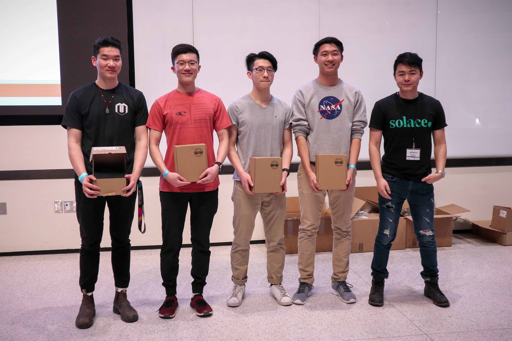

DetritusAI - IoT Smart City Waste Collection System
MakeUofT 2020 Project
🏆
MakeUofT
Best Use of Solace PubSub+ Cloud Message Brokering Platform
🏆 Major League Hacking Best Use of Google Cloud
Tech Stack
NodeMCU (Arduino Microcontroller) | C++ | Python | Raspberry Pi | Tensorflow | ReactJS | HTML5/CSS3 | Bootstrap | Solace PubSub+ | Google Maps API | I2C Protocol | IoT
Our Team
From left to right: Max Zhou, Patrick Li, Eric Feng, Darryl Wu, Solace Sponsor
Inspiration
The issue of waste management is something that many people view as trivial yet but is one of the most fundamental factors that
affects the liveability of a city. Even in Canada, a developed country, only 9% of plastics are recycled,
meaning that the equivalent of 24 CN towers of recyclable plastic enters our landfills each year. In developing nations,
this is an even more serious issue that can have profound impacts on quality of life.
In a world where manufacturing is at an all time high, waste management and waste collection are also at an all time high.
Whether it is industrial landfills or urban waste collection, the need to create an efficient system to categorize and
distribute efforts for waste collection is an imminent issue what many cities will need to face as we advance into the
era of IoT enabled smart cities.
Our team at MakeUofT 2020 sought to tackle this issue by creating smart city waste containers which use machine learning and
object detection to categorize waste as either garbage or recycling, IoT enabled microcontrollers continuously monitor the capacity
of each bin and this information is sent to a remote cloud platform where it is used to optimize waste collection routes based on the
capacity, distance, and current traffic patterns.

Image of DetritusAI waste containers, object detection camera on top prompts either lid (recycling or garbage) to open, under each lid are Time of Flight sensors used to determine volume of container.

Image of front end Google Map UI used for route optimization. Each marker represents a DetritusAI container and under each marker is the current state of the container.
How It Works
Detritus AI is a smart garbage can that is able to detect and categorize waste into the respective containers and transmit essential information that allows for the optimization of garbage routes. DetritusAI tracks the quantity of waste that is in each container and communicates with the client-side applications used by garbage truck drivers to determine how full each container is. Based on the capacity of each garbage can and its location, DetritusAI calculates the optimal route for garbage trucks to collect garbage while minimizing distance and time, even taking into account traffic.
How It's Built
When users place an object near the garbage can, a time of flight sensor detects the object and triggers an image classification algorithm
that identifies the category of the waste. A message is sent using Solace's PubSub+ Cloud Message Brokering Platform, which instructs
the waste container to open the appropriate lid depending on if the classification is recycling or garbage.
The image classification algorithm is run on a Raspberry Pi connected to wifi, when the time of flight sensor detects the objects, a message
is published to a Solace PubSub topic and is recieved by the Pi which starts the image classification. After the object has been classified,
the Pi publishes a PubSub message to either a Recycling or Garbage topic which the NodeMCU controlling the DetritusAI container reads and then
opens the appropriate container to prompt the user to dispose of their waste.
Within the garbage cans, the time of flight sensors continuously determines the capacity of the bin and communicates that information via
Solace to the ReactJS client-side application. The ReactJS application then displays the locations and capacities on a Google Maps UI and uses
this information to perform route optimization to allow for the most efficient method of collecting the waste.
Using the Google Directions API, the optimal route for garbage collection is determined by factoring in traffic, distance, and the capacity
of each bin. An optimal route is displayed on the dashboard, along with turn by turn directions for the driver to use.
Left: DetritusAI System Architecture. | Right: Solace PubSub+ Topic Hierarchy
What I Learned
This was the first project where I have used a PubSub platform to communicate between devices and applications. Normally, I would have used traditional REST protocol to establish the communication between our three services but given the asynchronous nature of this project, I decided to leverage the power of a publish/subscribe architecture to develop DetritusAI. In the end, we were able to utilize the full power of Solace's PubSub+ Message Brokering platform and were able to create communication between our NodeMCU Arduino Microcontroller, our Raspberry Pi, and our ReactJS front end using a single communication protocol.
Solace Blog
After the MakeUofT event, Solace published an article on their blog highlighting our project while also going into more detail about how Solace technology was utilized in this project, feel free to check it out here: Solace Blog.